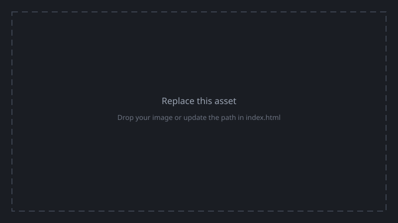

Team member 1
Short bio and major contributions (perception, planning, hardware, integration, report, video).
EECS 106A final project report · ROS 2 · UR manipulator · Intel RealSense
Tidyer is a tabletop manipulation system that perceives cluttered objects with a depth camera, reasons about grasps and arm motion, and uses a UR-series robot arm (via MoveIt) to pick and place items. The end goal is reliable, repeatable tidy-up behavior suitable for a lab demo and future extension to more complex scenes.
Tabletop tidying combines perception, planning, and control under real sensor noise, calibration error, and limited compute. Interesting problems include: segmenting and localizing objects in dense RGB-D data, producing stable pick poses, coordinating gripper timing with motion, and keeping the software stack modular enough to iterate quickly during integration weeks.
Similar pipelines appear in warehouse piece picking, kitting cells, assistive robots that clear surfaces, recycling sort lines, and light assembly where cameras replace fixturing. The same building blocks—3D perception, motion planning, and guarded execution—transfer directly to those domains.
A ROS 2 ament_python package (tidyer) hosts perception and planning nodes.
Bring-up is centralized in a single launch file that starts RealSense (point cloud + aligned depth),
perception, static transforms, the pick–place executor, and MoveIt. Interactive input runs in a
separate terminal so it retains a TTY.
Perception-heavy designs trade robustness to occlusion and reflectivity for hardware simplicity (no part-specific nests). MoveIt-based motion improves safety and repeatability in structured cells. Multi-node ROS graphs add latency and integration overhead but improve testability and team parallelization—important for a short course timeline.

docs/assets/ and update src).Primary hardware: UR manipulator (MoveIt config targets UR7e by default), Intel RealSense depth camera with point cloud streaming enabled, and robot-mounted or fixed-overhead camera mounting as built in your lab setup. Add wiring photos and a frame diagram when ready.
Key modules in this repository:
tidyer/perception/process_pointcloud.py — depth / point cloud processing pipeline.tidyer/planning/main.py — pick–place node: IK planning, trajectory execution, gripper services, job queue.tidyer/planning/ik.py — inverse kinematics helper used by the planner.tidyer/planning/static_tf_transform.py — static transforms for consistent frames.tidyer/planning/keyboard_trigger.py — interactive triggers (run separately from launch).launch/tidyer_bringup.launch.py — starts RealSense, perception, TF, pick–place, and MoveIt; global shutdown if any launched process exits.
Launch (tidyer_bringup.launch.py)
├─ RealSense (point cloud + aligned depth)
├─ process_pointcloud → perception outputs (topics TBD in your write-up)
├─ tidyer_tf → static / supporting transforms
├─ tidyer_pick_place → subscribes to pick pairs, plans/executes trajectories, gripper
└─ MoveIt (UR) → planning scene, RViz optional
Separate terminal: ros2 run tidyer tidyer_keyboard (interactive TTY)
Flesh out exact topic names, services, and message types when you freeze the interface for the report.
[Draft] Summarize which tasks succeeded (e.g., single-object pick, multi-object tidy run, failure modes). Include quantitative notes if you collected timing or success counts.
<iframe src="https://www.youtube.com/embed/VIDEO_ID" title="demo" allowfullscreen></iframe>
[Draft] Map each design criterion from §2a to what you observed in §4.
[Draft] Calibration, segmentation stability, timing with MoveIt, lab hardware, etc.
[Draft] List honest limitations (assumptions, tuned constants, demo-only shortcuts) and the next engineering steps you would take with more time.
Short bio and major contributions (perception, planning, hardware, integration, report, video).
Edit this card in docs/index.html.
Add or remove cards to match your roster.
package.xml).demo branch was the newest
line at integration time (latest commit: welp its the best it can be) and was kept in sync with
origin/demo. main and demo have diverged; document which branch you grade or
demo from in your submission text if both exist.